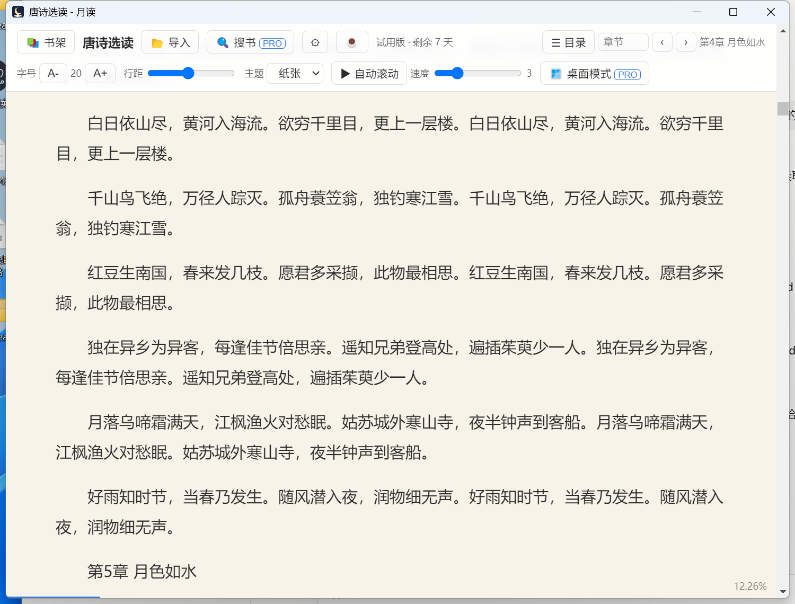
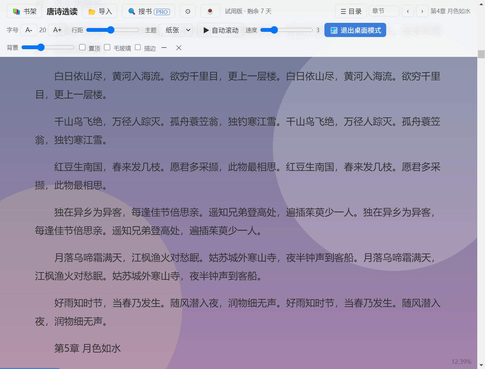

窗口透明，只剩文字浮在桌面上。背景浓淡随意调，可置顶、毛玻璃、描边。看书不挡事。
全局快捷键一键隐藏，再按恢复。托盘图标常驻，想看就看。
不按章翻页，一个长页面读到底。百万字大书秒开，自动滚动十档速度。
按段落记住读到哪里，改字号也不跑位。自动识别章节，输入数字直达。
txt 自动识别 GBK 与 UTF-8，epub 一键转换。拖进窗口即可导入。
兼容 so-novel 书源规则格式，导入规则后可联网搜书并整本下载。软件本身不含任何书源。


| 功能 | 免费版 | 专业版 |
|---|---|---|
| txt 导入、阅读、进度记忆、章节定位、自动滚动、四种主题 | ✓ | ✓ |
| 桌面模式（透明窗口） | ✓ | |
| 老板键 | ✓ | |
| epub 导入 | ✓ | |
| 联网搜书（自定义书源） | ✓ |
新安装免费试用专业版 7 天。激活码离线校验，一次购买永久使用。